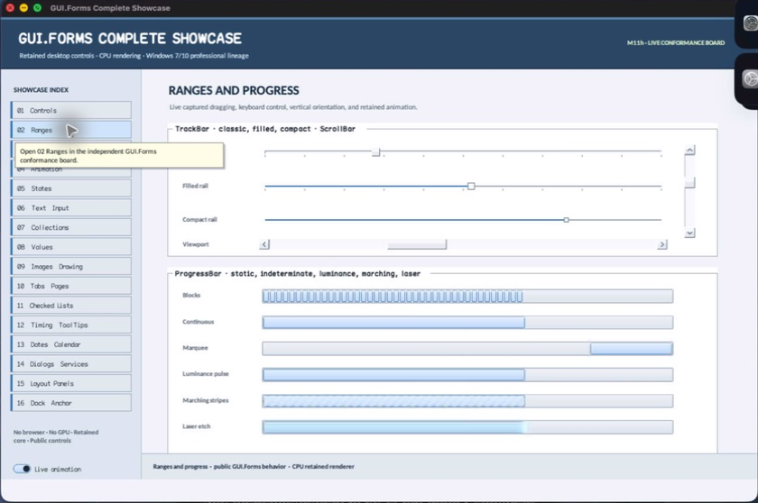

class · visual
ScrollBar
ScrollBar specializes RangeControl with independently bounded button/thumb/repeat timing, inspectable part geometry, proportional thumb allocation, drag and track/button interaction, deterministic key behavior, retained auto-repeat, focus cues, and scrollbar semantics.
Visual evidence

Ownership and hierarchy
- Hierarchy
- RangeControl → ScrollBar
- Declaration
- include/gui_forms/controls/range_control/scroll_bar/scroll_bar.hpp:19
- Definition
- src/controls/range_control/scroll_bar/scroll_bar.cpp
Declared methods
ScrollBar public
explicit ScrollBar(StableId stable_id, Orientation orientation = Orientation::vertical)Constructs an orientation-specific range control with scrollbar cursor and repeat state.
button_extent public
[[nodiscard]] double button_extent() const noexceptReturns the logical decrement/increment button axis extent.
set_button_extent public
void set_button_extent(double extent)Accepts a finite bounded extent and invalidates geometry and paint.
minimum_thumb_extent public
[[nodiscard]] double minimum_thumb_extent() const noexceptReturns the minimum logical draggable thumb extent.
set_minimum_thumb_extent public
void set_minimum_thumb_extent(double extent)Accepts a finite bounded positive extent and invalidates geometry.
initial_repeat_delay public
[[nodiscard]] FrameInterval initial_repeat_delay() const noexceptReturns the delay before a held part first repeats.
set_initial_repeat_delay public
void set_initial_repeat_delay(FrameInterval delay)Accepts a positive duration for repeat qualification.
repeat_interval public
[[nodiscard]] FrameInterval repeat_interval() const noexceptReturns the positive interval between qualified repeats.
set_repeat_interval public
void set_repeat_interval(FrameInterval interval)Accepts a positive repeat cadence.
decrement_button_bounds public
[[nodiscard]] Rect decrement_button_bounds() const noexceptReturns the current local geometry of the leading decrement part.
increment_button_bounds public
[[nodiscard]] Rect increment_button_bounds() const noexceptReturns the current local geometry of the trailing increment part.
track_bounds public
[[nodiscard]] Rect track_bounds() const noexceptReturns the local axis track between command buttons.
thumb_bounds public
[[nodiscard]] Rect thumb_bounds() const noexceptReturns the constrained proportional thumb geometry within the track.
part_at public
[[nodiscard]] ScrollBarPart part_at(Point local_point) const noexceptClassifies a local point as none, decrement button/page, thumb, increment page/button.
measure public
[[nodiscard]] Size measure(Size available) overrideProvides orientation-aware desired thickness and two-button axis length.
on_paint public
void on_paint(Painter& painter, Rect local_damage) overrideRecords buttons, chevrons, track, pages, thumb, interaction, focus, and disabled states.
on_pointer public
void on_pointer(PointerEvent& event) overrideOwns part qualification, capture, thumb dragging, page/line changes, cancellation, and repeat scheduling.
on_key public
void on_key(KeyEvent& event) overrideHandles arrows, page movement, home, and end through reasoned RangeControl transitions.
on_focus_changed public
void on_focus_changed(bool focused) overrideCommits keyboard focus cues and stops interaction when focus policy requires.
on_frame public
void on_frame(FrameTime now) overrideExecutes deadline-based held-part repeats while preserving current pointer qualification.
semantic_descriptor public
[[nodiscard]] SemanticDescriptor semantic_descriptor() const overrideProjects a scrollbar role with range, value, orientation, and line/page actions.
on_semantic_action public
bool on_semantic_action(SemanticAction action, std::string_view value) overrideRoutes increment, decrement, page, and set-value commands through ordinary constrained state.
on_detached_from_window protected
void on_detached_from_window() noexcept overrideExecutes ScrollBar's on detached from window operation against retained state; the signature records its exact inputs, result, constness, and failure surface.
axis_coordinate private
[[nodiscard]] double axis_coordinate(Point local_point) const noexceptReports the current axis coordinate value without mutation.
value_from_thumb_coordinate private
[[nodiscard]] double value_from_thumb_coordinate(double coordinate) const noexceptReports the current value from thumb coordinate value without mutation.
apply_part private
bool apply_part(ScrollBarPart part)Executes ScrollBar's apply part operation against retained state; the signature records its exact inputs, result, constness, and failure surface.
begin_repeat private
void begin_repeat(ScrollBarPart part, Point pointer)Executes ScrollBar's begin repeat operation against retained state; the signature records its exact inputs, result, constness, and failure surface.
stop_interaction private
void stop_interaction() noexceptExecutes ScrollBar's stop interaction operation against retained state; the signature records its exact inputs, result, constness, and failure surface.